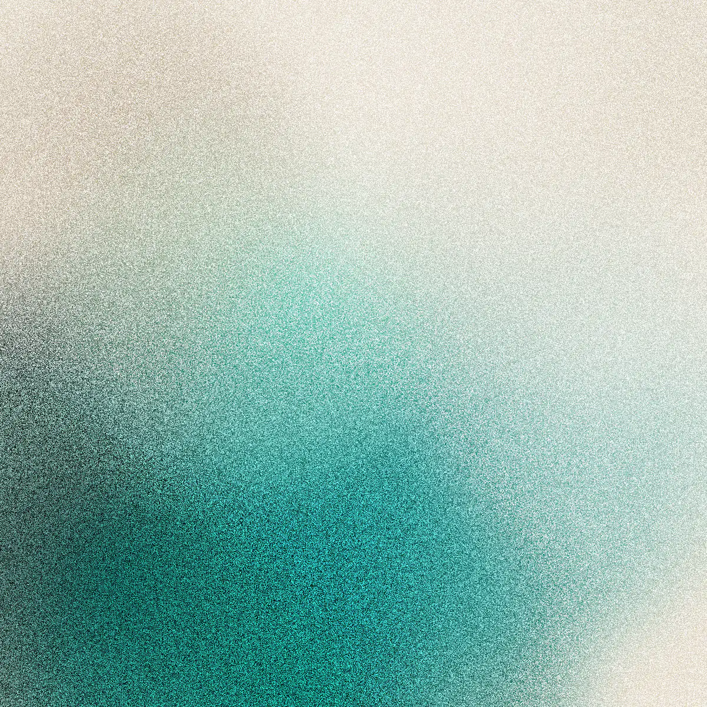
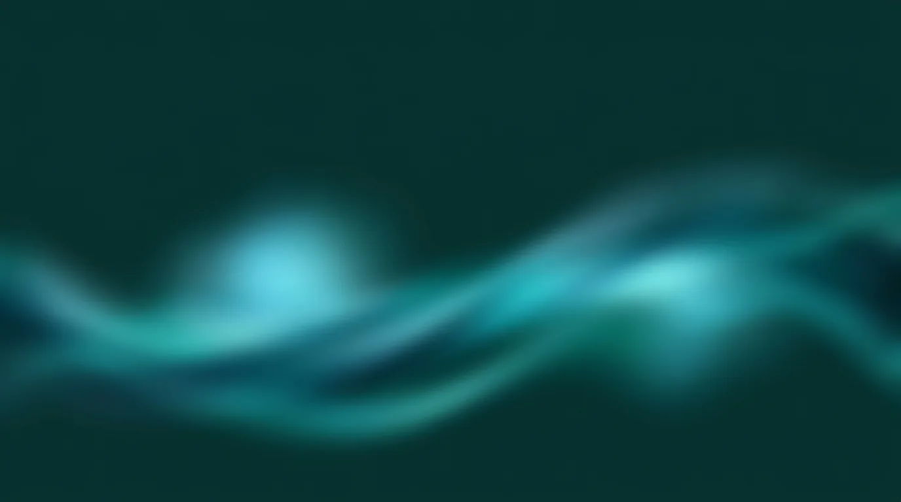

Arte nítido (pieza cuadrada)

Cómo funciona
Describe tu formulario y la IA lo crea
Formularios que la gente sí termina.
formelia.io
Desliza →
Arte difuminado (pieza apaisada)

De la idea a las respuestas
Lo que pasa entre que preguntas y que te enteras
El recorrido completo, del enlace al resumen.
formelia.io
Desliza →
Arte difuminado, promesa corta

Tu próximo formulario puede estar listo hoy
formelia.io
Desliza →